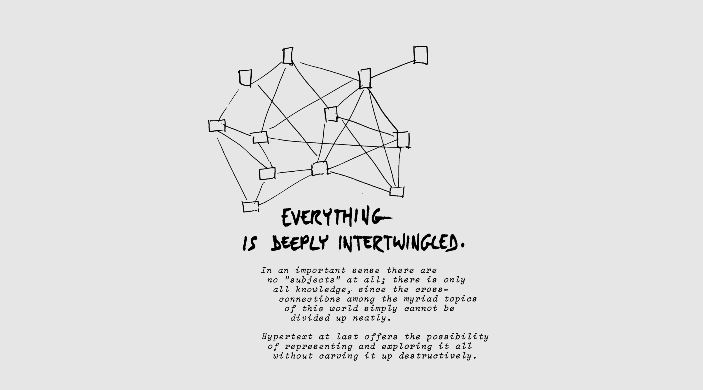

My first internet memory was when i was in the small flourescent filled room of my father's office with a big macintosh booting up the main windows operating system. most likely the windows xp because it was created on August 24, 2001... it really did feel like the 2001: A Space Odyssey.
A nostalgic internet memory that I often reminisce about, is getting online to play games with my friends in middle school. Playing stupid flash games or going on club penguin, it was hard to wait for the computer to boot up so I could login. In contrast to now those computers took forever to load, I have to laugh a little anytime I think my computer is being slow now. Even though I have been around computers my whole life, I still am amazed everytime I create something new or discover a new feature.